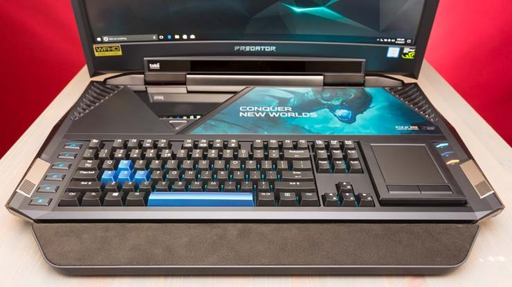
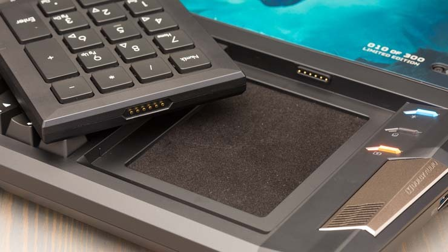
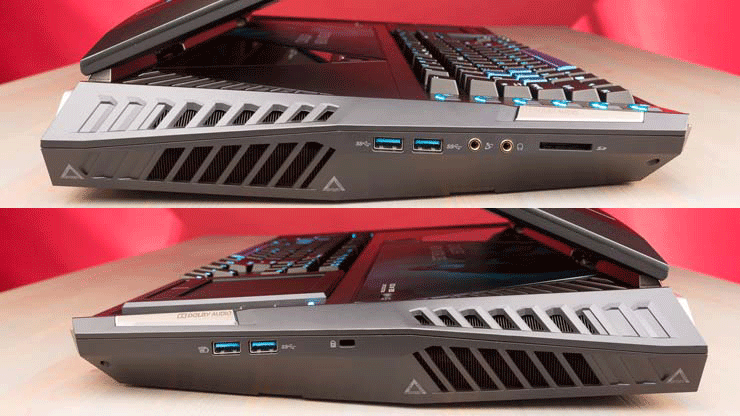
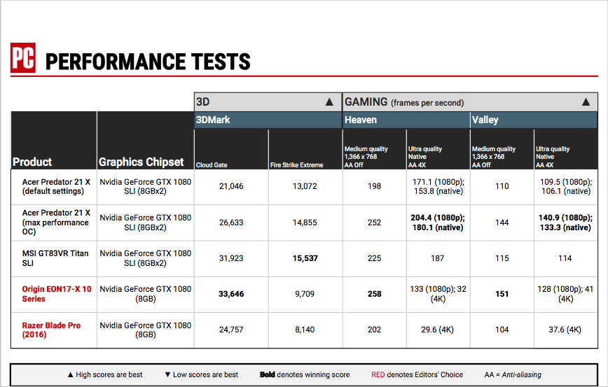

It Lies Within
The Predator X21
There are are certain over-the-top luxury goods that exist to display their owners' social status, such as the Hermes Birkin handbag
or the Mercedes AMG S65 sedan. The $8,999.99 Acer Predator 21 X aims to join the PC equivalent of that lot, which includes the Microsoft Surface
Studio desktop PC and the Razer Blade Pro gaming laptop. Its attention-grabbing looks and formidable size will turn every head in the room, and that
is its raison d'être. It has an impressive laundry list of high-end gaming components like a 21-inch curved screen, dual Nvidia GeForce GTX 1080 graphics processors,
64GB of RAM, and an overclocked Intel Core i7 CPU. No other gaming laptop
matches its audacity, but because of that sky-high price tag, power systems like the Editors' Choice Origin EON17-X 10 Series ultimately present
a better balance of price and performance.
Pushing the Definition of Laptop
Measuring 3.27 by 22.36 by 12.38 inches (HWD) and weighing 18.6 pounds, the Predator 21 X
pushes the boundaries of what you can actually call a laptop.
It's so massive that anyone short of Dwayne "The Rock" Johnson would have trouble holding it perched on his or her lap.
It may fit the definition of a self-enclosed, transportable computer, but you'll tire yourself out if you move it further
than from your den to your patio. This system is more akin to an all-in-one desktop with a screen you can fold down, rather
than grab-and-go laptop.

Because it is so large, the Predator 21 X doesn't come packed solely in a cardboard box. Instead it is fitted into a large, waterproof high-grade plastic
case that protects it from dust and impact. The case's wheels and handle help you transport the laptop like a rolling suitcase. Once it's packed into
that padded case,
Acer then puts another cardboard box around that for shipping.
The 21-inch curved screen, with 2,560 by 1,080 resolution and 21:9 aspect ratio, is part of the reason for its large body.
The screen specs allow more visuals, like a full screen for CinemaScope-wide movies
or two or three game windows side by side, to be displayed.
The curve helps you view the wide expanse from a few feet away without having to pivot your head. During our testing, the screen looked great,
with clear visuals and nary a hint of artifacts or pixelation. Brightness is excellent, and with few reflections. The display also has a
120Hz refresh rate and is Nvidia G-Sync certified, which translates into smoother
animation with fewer glitches like tearing and blurring during game play.
A major nit: The display isn't 4K resolution (4,096 by 2,160), which is crazy given the $9,000 price. Other high-end gaming laptops like
the Razer Blade Pro ($1,299.99 at Amazon)(Opens in a new window) and the Origin EON17-X 10 Series ($2,167.00 at ORIGIN PC)(Opens in a new window) ,
our latest top picks, have 17-inch 4K (3,840 by 2,160) screens.
Being able to display native 4K content would provide an even more immersive experience.
Sweet Mechanical Keyboard
The showy mechanical keyboard uses Cherry MX Brown switches, which have some tactile feedback, but aren't as clicky as traditional MX Blue switches.
Some professional and enthusiast gamers prefer the solid feel and rapid response of mechanical key switches over the shallow scissor switches on most
gaming laptops. The depth of the key switches is another reason that the system is so big: they need a couple of inches of vertical clearance,
so the keyboard is farther from the screen. The keys have 4mm of travel, and actuate after about 2mm. You can replace the WASD keys and space bar
with the blue key caps included with the laptop, or customize them later with third-party key caps. Acer includes a detachable magnetic palm rest.

The keyboard features RGB lighting (16.7 million colors), which is fully customizable in Acer's Predator Sense utility. Each key can be lit with an
individual color or by zones, and can be matched to, or contrast with, the light strips on the lid and laptop body. The lighting is attractive, and
broadcasts that this is a high-end gaming laptop.
To the right of the keyboard is a removable panel with a touchpad on one side, and a numeric keypad on the other. Some gamers prefer to use the keypad, particularly if they also use a USB gaming mouse for control. This setup is a bit more flexible than the MSI GT80 SLI Titan and its successor, the GT83VR SLI Titan , both of which embed a light-up touch-sensitive numeric keypad in their touchpads,
a solution that lacks tactile feedback.

There's a row of five programmable macro keys to the left of the main keys, which we appreciate in a gaming laptop keyboard. You can program them to
chain key combinations, like your favorite attack sequences, or use them to cycle the laptop's overclocking features, as is set by default.
A lightbar embedded in the laptop's hinge houses the sensors for the Tobii eye-tracking system. Tobii keeps track of what you're looking at on the screen,
and works with features in games that support the technology. For example, it can shave milliseconds of reaction
time in games like The Division or Watch Dogs 2, just by looking at the target.
We found the technology to be responsive and not too intrusive, but it does take some time to get used to.
Wall of Sound
The Predator 21 X has six speakers in its voluminous chassis. There are two tweeters and two midrange speakers on either side of the keyboard and two
bass drivers/subwoofers on the bottom panel. Together, they produce enough sound to entertain a dorm room party, or impress visitors during a gaming session.
Playing back our usual mix of trailers and sound files filled a medium to large room.
There are five fans to cool the system: two for each of the GPUs, one for the CPU, and two to force cooling air over the rest of the system.
The CPU fan is lit, and shows through a clear panel above the keyboard. The fans are self-cleaning, so they remove dust automatically, and the CPU and GPU
fans are made of metal for longevity. You can use the Acer Predator Sense utility to manually control the fans, up to the point that the noise drowns out
conversations in the area, but we found our best results using the default automatic setting. In testing,
the fans didn't spin up too loud, even when we were running benchmarks with the CPU and GPU overclocked.
Supporting all of these high-end features requires two AC power adapters that, along with the bracket that holds them together,
weigh 7.53 pounds and
even further prohibit portability. This is a similar setup to the Acer's small form factor gaming desktops
like the Acer Predator G1-710-70001 ( at Amazon)(Opens in a new window) , which also require two power jacks or a power strip. Combined with the weight of the laptop itself, you're carrying over 26 pounds of electronics.
Connectivity is extensive, but that's not surprising, since there's so much real estate on the chassis. You'll find a headset jack,
a microphone jack, an SD card reader, and two USB 3.0 ports on the left side of the laptop. On the right, there's another pair
of USB 3.0 ports and a Kensington lock port. On the back, there are the two AC adapter jacks, an Ethernet port, an HDMI port,
two DisplayPorts, and a USB-C port with Thunderbolt 3 technology. 802.11ac Wi-Fi and Bluetooth 4.1 handle wireless connections.
The system will support up to four external displays, or three and the internal display, simultaneously,
and has more than enough power and connectivity to work with VR.

The system is maxed out with 64GB of RAM, and has two 512GB M.2 solid-state drives (SSD) in a RAID 0 array as a boot drive. A 1TB 7,200rpm
SATA provides extra data storage for a total of 2TB, and there are empty drive bays in the body for two more M.2 SSDs.
A printed graphic of a blue dragon covers a maintenance panel above the keyboard, with a limited edition series number for the first
300 Predator 21 X laptops sold (ours was number 10). Acer offers a customized replacement panel with multiple patterns and national flags,
along with an engraving option. This maintenance door and another plain panel on the bottom cover access to the system's
memory and storage. The system comes with a two-year warranty.
Killer Performance (for a Killer Price)
Because the system uses an unlocked 2.9 GHz Intel Core i7-7820HK processor and two Nvidia GeForce GTX 1080 GPUs in an SLI configuration,
it's no surprise that it returned some of the highest 3D benchmark test results we've seen on a gaming laptop. At the default clock speeds,
The Predator 21 X is able to play our Heaven (154fps) and Valley (106fps) tests smoothly, even at 2,650 by 1,080 resolution with all
the eye candy turned up to full. When we turned the overclocking settings in the Acer Predator Sense utility to max, both scores increased
by just under 30fps. When we tested the laptop at 1,920 by 1,080 resolution and the same quality settings, the MSI GT83VR Titan SLI was competitive
when the Predator was using its default clock speeds, but lagged behind when the system was overclocked. Both the Origin EON17-X 10 Series and 2016
version of the Razer Blade Pro returned slower numbers, due to their 4K screens and single GTX 1080 GPUs.
This puts a fine point on our claims that it's a shame that the Predator 21 X lacks a 4K screen, because it could drive one smoothly.

The laptop's performance on day-to-day tasks was average for this overpowered pack, but it will be many years before the system starts to feel slow.
For example, it only took 59 seconds to complete our Handbrake test, and 2:05 to finish the Photoshop test.
Any Handbrake test score below one minute is phenomenal, as are Photoshop times below four minutes.

The one exception is battery life. None of the gaming laptops compared above broke the four-hour barrier, but the Razer Blade Pro was close (3:48).
The other three laptops clustered around the two-hour limit, with the Predator bringing up the rear at 2:05. Keep the power bricks handy,
because you'll need them any time you perform a task more complicated than watching a movie or surfing the web.
Powerful, but Barely Portable
As an example of what a manufacturer can do, given an unlimited budget, the Acer Predator 21 X mostly succeeds. It's one of the fastest
laptops we've tested, with the largest screen we've seen on a portable PC. It costs as much as one of the exquisite desktop gaming rigs
like the Maingear Rush X99 Super Stock , though you'd have even less incentive to move that monolith once you've set it up. The Predator 21 X
barely meets the definition of transportable, but it's far too bulky to bring to your friends' house every day, the price far exceeds current
top picks for high-end gaming laptops, and we're still left wanting a 4K resolution screen. Because of these factors, we'd still steer well-heeled
gamers toward the Editors'
Choice Origin EON17-X 10 Series or the Razer Blade Pro.